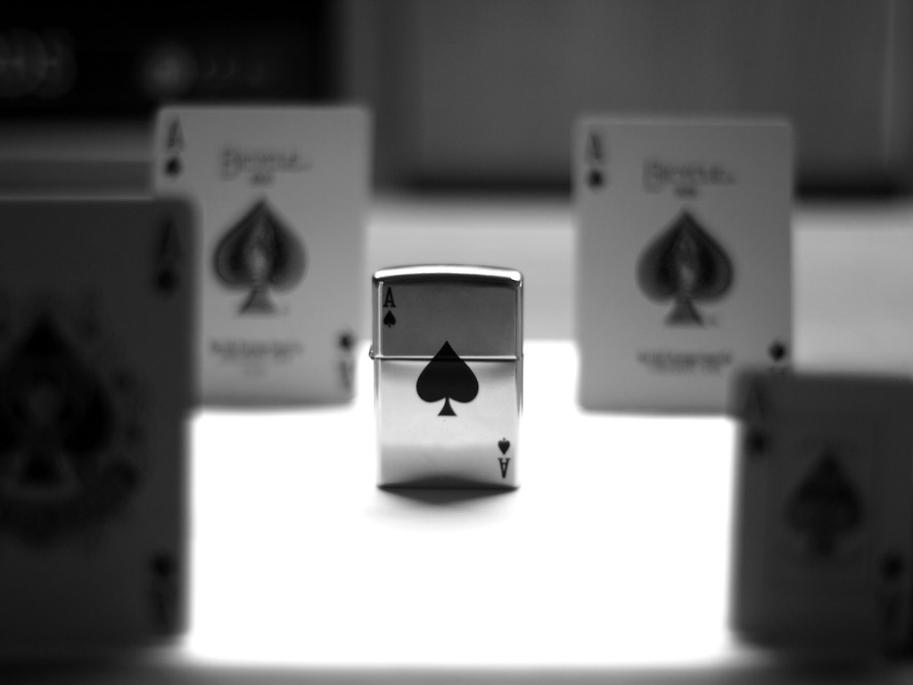

Probabilitat condicionada.Successos independents. Regla del producte.
Amb el concepte de probabilitat condicionada obtenim noves formes de calcular probabilitats de successos. En el capítol anterior vam obtenir propietats que permeten calcular la probabilitat d'un succés com a suma de probabilitats de successos més simples; en aquest capítol ho farem com a producte de probabilitats de uccessos més simples.
Problemes que amb la regla de Laplace solucionàvem amb esforç podran ser resolts per multiplicació de probabilitats de successos senzills però, a més, resoldrem problemes que amb l’esmentada regla no podíem, com són els associats a espais mostrals no finits.
Exemple 1.Llancem tres vegades una moneda anotant els resultats obtinguts en cada llançament. Calculem la probabilitat d’obtenir cara en el tercer llançament en els següents casos:
a)Sense més informació.
b)Si sabem que hem obtingut un total de dues cares en els tres llançaments.
L’espai mostral $\Omega$ consta de 8 resultats, les variacions amb repetició de 2 elements d’ordre 3:$\Omega$={CCC, CCK, CKC, KCC, CKK, KCK, KKC, KKK}.
a)Definim el succés A: cara en el tercer llançament.Hi ha 4 resultats favorables a A, aquells que tenen una C en tercer lloc: A ={CCC, CKC, KCC, KKC}
$\to$ P(A) = $\frac{favorables}{possibles}$ = $\frac{4}{8}$ = $\frac{1}{2}$
b) Definim el succés B: “Dues cares en els tres llançaments”.
Si sabem que B s’ha verificat, l’espai mostral queda reduït als 3 resultats que pertanyen a B, ja que en cap cas podria donar-se altra possibilitat:$\Omega$$^$= B= { CCK, CKC, KCC }.Entre ells, els dos últims són favorables a A. Així, la probabilitat d'A, en l’espai reduït $\Omega$$^$, és: P$^*$(A)=$\frac{favorables}{possibles}$=$\frac{2}{3}$.
La probabilitat P$^*$(A), calculada reduint l'espai mostral $\Omega$ a $\Omega$$^$ = B, rep el nom de probabilitat d'A condicionada a B, que expressem per P(A/B), i representa la proporció, sobre el conjunt de resultats de B, dels resultats de A B. Per tant:
P(A) = P(A/B) =$\frac{nbre\ de\ resultats\ d'A\cap B}{nbre\ de\ resutats\ de\ B}$.
Però obtenim el mateix resultat si dividim entre si les probabilitats de A B i de B, calculades amb els 8 resultats de $\Omega$
P(A/B)=$\frac{P(A\cap B)}{P(B)}$=$\frac{\frac{2}{8}}{\frac{3}{8}}$=$\frac{2}{3}$, ja que B = {CCK, CKC, KCC} i A$\cap$ B = {CKC, KCC} i, per tant, P(B) =$\frac{3}{8}$ i P(A$\cap$ B)=$\frac{2}{8}$.
Concepte de probabilitat condicionada.
|Considerem l'espai de successos S d'un experiment aleatori i P:S$\to$R una funció de probabilitat.Agafem un succés fix B$\in$S, amb P(B)>0, que anomenarem succés condicionant.Donat un succés A$\in$S, anomenem probabilitat de A condicionada a B, que representem per P(A/B), a l’expressió: P(A/B)=$\frac{P(A\cap B)}{P(B)}$|.
Exemple 2.Una persona extrau cartes d'una baralla espanyola. Si sabem que en dues extraccions va obtenir 2 sotes, calcula la probabilitat que:
a) Siguen la d'ors i la de copes.
b) En una tercera extracció obtinga una altra sota.
Calculem probabilitats condicionades al succés B: “en 2 extraccions han eixit 2 sotes”.
c) Anomenem A: “en dues extraccions han eixit la sota d'ors i la de copes”.
Volem la probabilitat de A condicionada a B, que podem obtenir de dues formes distintes:
- Amb la fórmula de la probabilitat condicionada, calculant les probabilitats de A$\cap$B i de B en l'espai mostral format per totes les parelles amb 2 cartes de les 40 existents:
P(B)=$\frac{favorablesB}{possibles}$=$\frac{12}{1560}$=$\frac{6}{780}$
P(A$\cap$B) =$\frac{nbre\ de\ resultats\ d'A\cap B}{casos \ possibles }$=$\frac{2}{1560}$=$\frac{1}{780}$
P(A/B) =$\frac{P(A\cap B)}{P(B)}$ =$\frac{\frac{1}{780}}{\frac{6}{780}}$=$\frac{1}{6}$.
- Reduint l'espai mostral: Si sabem que en 2 extraccions es van obtenir 2 sotes, aleshores els únics casos possibles són les 6 possibles parelles de sotes: $\Omega$$^$={(SO, SC), (SO, SE), (SO, SB), (SC, SE), (SC, SB), (SE, SB)} dels quals només un és favorable al succés A: la parella (SO, SC), aleshores: P(A/B)=P$^$(A)=$\frac{1}{6}$
d)La forma recomanable de calcular la probabilitat de S: “obtenir una sota en la tercera extracció” condicionada al succés B: “en les dues primeres extraccions hem obtingut 2 sotes” és reduint l'espai mostral a 38 cartes, de les quals només hi ha 2 sotes (les que no han sigut tretes encara).
Casos possibles:38(les cartes que queden); casos favorables:2(les sotes que queden)$\to$ P(S/B)=$\frac{2}{38}$.

ACTIVITATS DE PROBABILITAT CONDICIONADA
1.Una persona extrau 2 cartes d'una baralla espanyola i informa que almenys té un as. Quina és la probabilitat que tinga dos asos?
2.Una persona llança 3 vegades una moneda. Si sabem que la persona va obtenir exactament una cara en els 3 llançaments, calcula la probabilitat que aqueixa cara l'obtinguera en el primer llançament:
a) Amb l'espai mostral de l'experiment aleatori, utilitzant la definició de probabilitat condicionada. b) Amb l'espai mostral reduït als casos en què s'obté exactament una cara. c) Repeteix els apartats anteriors, si el que sabem és que la persona va obtenir alguna cara.
3.El 70% dels estudiants d'un col·legi va aprovar una assignatura A, el 75% va aprovar una altra assignatura B, però només un 60% va aprovar les dues assignatures. Contesta a les següents qüestions:
a) Si una persona va aprovar l'assignatura A, probabilitat que també aprovara la B. b) Si una persona va aprovar l'assignatura A, probabilitat que no aprovara la B. c) Si una persona no va aprovar l'assignatura A, probabilitat que aprovara la B. d) Si una persona va aprovar alguna de les dues assignatures, probabilitat d'haver aprovat la A.
4.Si al elegir una carta d'una baralla espanyola, obtenim una figura, quina és la probabilitat (que òbviament és condicionada) que siga una carta de copes? I que siga una sota? I que siga una carta de copes o una sota? I que siga la sota de copes?
5.Elegim una carta d'una baralla espanyola, que resulta ser un as. Quina és la probabilitat d'elegir una altra i que siga un altre as? I que no ho siga?
6.Al elegir 5 cartes d'una baralla espanyola, obtenim 3 asos. Quina és la probabilitat que al elegir una carta més, aquesta siga l'as que queda?
7.Una urna té 5 boles blanques i 3 boles negres. Extraiem 2 boles, que resulten ser de colors distints. Calcula la probabilitat d'extraure altres 2 boles del mateix color.
Independència estadística
En els exemples anteriors hem vist que la probabilitat d'un succés A pot canviar al introduir la informació que proporciona la verificació d'un altre succés B, i es calcula amb la probabilitat condicionada. Si açò ocorre és que B influeix d'alguna forma en A. Esta situació origina un concepte molt important que és el d'independència estadística.
| Diem que B afavoreix a A si P(A/B)>P(A). Diem que B desafavoreix |a A si P(A/B)<P(A). | |En els dos casos direm que A i B són dependents.En canvi, diem que |dos successos A i B són independents si les seues probabilitats |condicionades són iguals a les seues pròpies probabilitats: A i B són |independents$\iff$ P(A/B) = P(A) i P(B/A) = P(B) |
Caracterització d'independència per a dos successos:
(Regla del producte per a successos independents) A i B són independents si i nomes si P(A$\cap$B))=P(A)·P(B) Independència estadística per a més de dos successos: Els successos A$_1$, A$_2$, ..., A$_n$ són independents si i només si per a qualsevol subconjunt dels anteriors successos la probabilitat de la intersecció és el producte de probabilitats. L'anterior definició significa, per a 3 successos, el següent: Els successos A, B i C són independents si i només si:
- P(A$\cap$B)=P(A)·P(B), P(A$\cap$C)=P(A)·P(C), P(B$\cap$C)=P(B)·P(C).
- P(A$\cap$B$\cap$C) = P(A)·P(B)·P(C). En el cas en què només es verifica (1), diem que els successos són independents 2 a 2.
De la caracterització d'independència deduïm que si disposem d'un conjunt de successos independents, la probabilitat de la intersecció de qualsevol nombre d'ells és igual al producte de les probabilitats respectives.Si els successos A$_1$, A$_2$, ..., A$_n$ són independents, aleshores:
P(A$_1$$\cap$ A$_2$ ··· A$_n$) = P(A$_1$) · P(A$_2$) ··· P(A$_n$)

Teorema de la multiplicitat
(Regla del producte per a successos dependents)
A i B són independents si i només si P(A$\cap$ B)=P(A/B)·P(B) Per a dos successos: si A$_1$ i A$_2$ són dos successos qualssevol, amb P(A$_1$) > 0, aleshores: P(A$_1$ $\cap$A $_2$) = P(A$_1$)·P(A$_2$/A$_1$) Per a tres successos: si A$_1$, A$_2$ i A$_3$ són dos successos qualssevol, amb P(A$_1$$\cap$A$_2$)> 0: P(A$_1$$\cap$ A$_2$$\cap$ A$_3$) = P(A$_1$)·P(A$_2$/A$_1$)·P(A$_3$/A$_1$$\cap$A$_2$) Per a n successos: si A$_1$, A$_2$,..., A$_n$ són successos qualssevol, amb P(A$_1$$\cap$ A$_2$$\cap$ · · ·$\cap$ A$_n-_1$ )> 0: P(A$_1$$\cap$ A$_2$ ··· A$_n$)= P(A$_1$) ·P(A$_2$/A$_1$)···P(A$_n$/A$_1$ A$_2$$\cap$···$\cap$ A$_n-_1$)
Exemple 1.Tenim tres urnes U$_1$, U$_2$ i U$_3$ amb les següents composicions: U1 té 6 boles blaves i 4 roges, U$_2$ té 5 blaves i 5 roges, i U$_3$ té 4 blaves i 3 roges. Traiem una bola de cada urna i calculem les probabilitats de:a) A: “les 3 boles tretes són blaves”.b) B: “les 2 primeres boles tretes són roges, i la tercera és blava”. p Definim els següents successos.A$_i$ :“obtenim una bola blava de l'urna U$_i$”.R$_i$: “obtenim una bola roja de l'urna U$i$”, per a i =1,2,3.L'extracció d'una bola de cadascuna de les 3 urnes és un experiment aleatori que es pot descompondre en 3 dels experiments més simples, que són cadascuna de les extraccions. Les probabilitats d'obtenir una bola blava o una roja en cada extracció són molt fàcils de calcular:

Figura 12: Urnes
a) El succés A es pot expressar: A= A$_1$$\cap$ A$_2$$\cap$A$_3$ Com que no hi ha cap relació entre els resultats que obtenim en les 3 proves, els successos A$_1$, A$_2$ i A$_3$ són independents, i per tant: P(A)=P(A$_1$$\cap$ A$_2$$\cap$A$_3$)=P($A_1$)·P($A_2$)·P($A_3$)=$\frac{6}{10}$·$\frac{5}{10}$·$\frac{4}{7}$
b) De la mateixa manera, B s'expressa com: B =R$_1$$\cap$ R$_2$$\cap$A$_3$ Els successos de l'anterior intersecció són també independents, per ser de proves no relacionades: P(B)=(R$_1$$\cap$ R$_2$$\cap$A$_3$)=P($R_1$)·P($R_2$)·P($A_3$)=$\frac{4}{10}$·$\frac{5}{10}$·$\frac{3}{7}$
Compte!
Aneu amb compte al realitzar les activitats. Dibuixeu el diagrame en arbre per visualitzar amb claredat el què vos demana en cada cas o en cada apartat.

ACTIVITATS DE PROBABILITAT D'EXPERMENTS COMPOSTOS
-
Tenim una caixa amb 3 boles negres i 5 blanques, i una altra caixa amb 4 boles negres i 6 blanques. Agafem una bola de cada caixa. Calcula les següents probabilitats: a) Que les dues boles siguen blanques. b) Que les dues boles siguen negres.
-
Si les boles de les 2 caixes de l'activitat 1 les reunim en una caixa única, i traiem 2 boles, calcula: a) La probabilitat d'obtenir 2 boles blanques. b) La d'obtenir 2 boles negres.
-
Considerem el següent experiment: extraiem boles una a una sense reemplaçament d'una urna que conté 6 boles blaves i 4 roges. Calculem les següents probabilitats: a) D'obtenir, amb tres extraccions, i en aquest ordre, una bola blava, una altra roja i una altra blava. b) D'obtenir, amb quatre extraccions, i en aquest ordre, bola blava, roja, blava i roja.
-
Calcula les probabilitats dels successos de l'exemple anterior en el cas en què les extraccions són amb reemplaçament.
-
Extraiem una a una, i sense reemplaçament, totes les boles que hi ha en una caixa que conté 5 boles blanques i 5 boles negres. Calcula la probabilitat que, en les 10 extraccions, no repetim color en dues extraccions successives.
-
Un examen consta de 3 assignatures que contenen 10, 8 i 7 temes respectivament. Un estudiant es prepara 4 temes de cada assignatura. L’exercici consisteix a triar a l’atzar un tema de cada assignatura i respondre correctament. Calcula les probabilitats de: a) Aprovar les 3 assignatures. b) No aprovar cap assignatura. c) Aprovar alguna assignatura. d) Aprovar una de les 3 assignatures.